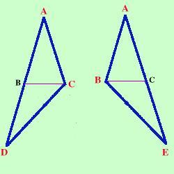

Se un triangolo ha due angoli congruenti allora ha congruenti anche i lati opposti agli angoli congruenti Scriviamolo in modo geometrico: ipotesi, tesi e figura corrispondente 
Ipotesi
Tesi
 Prolungo i lati AB ed AC oltre B e C di due segmenti congruenti BD e CE.
Prolungo i lati AB ed AC oltre B e C di due segmenti congruenti BD e CE.
Ora considero i triangoli BDC ed BEC (per comodita' te li estraggo nella figura a fianco); essi hanno: BD = CE per costruzione BC = BC perche' in comune (Non nel senso di Municipio) Gli angoli CBD e BCE congruenti perche' supplementari di angoli congruenti (sommati agli angoli di partenza uguali per ipotesi danno un angolo piatto) Quindi i due triangoli sono congruenti per il primo criterio ed in particolare avranno congruenti l'altro lato e gli altri angoli; DC=BE BDC=BEC BCD=CBE Considero ora i triangoli ADC e ABE;  essi hanno CD=BE perche' appena dimostrato gli angoliADC=BEA perche' appena dimostrato (corrispondono a BDC=BEC) gli angoliACD=ABE congruenti perche' somma di angoli congruenti Infatti ACD = ACB + BCD ed anche ABE = ABC + CBE i primi dopo l'uguale sono congruenti per ipotesi e gli altri sono congruenti perche' appena dimostrato Quindi i due triangoli sono congruenti per il secondo criterio di congruenza ed in particolare avranno i latiAB e AC congruenti come volevamo dimostrare. |
|||||||||||||||||

|

|

|

|